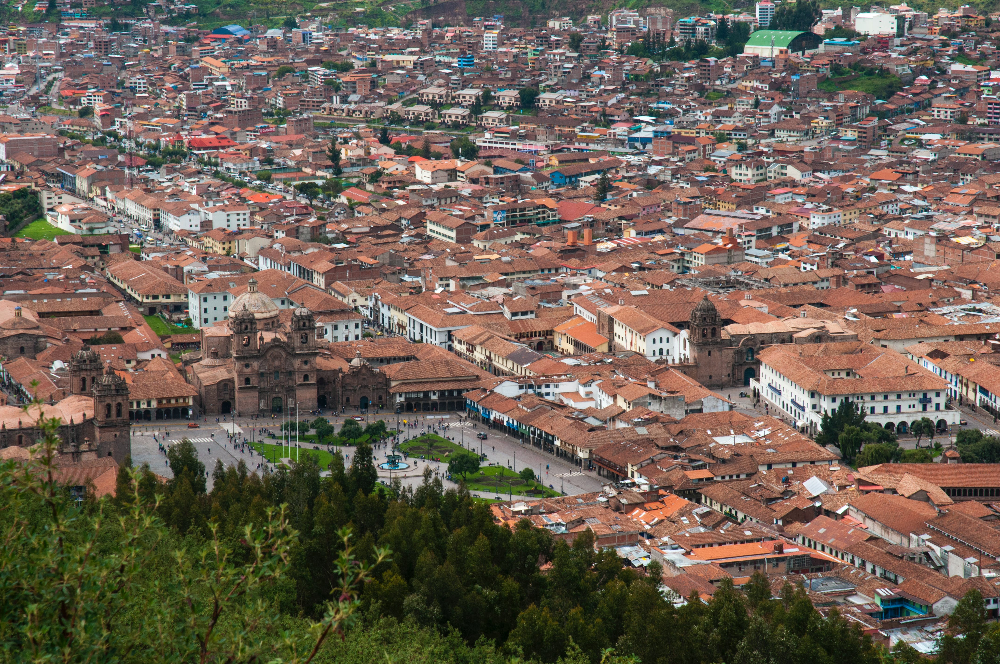
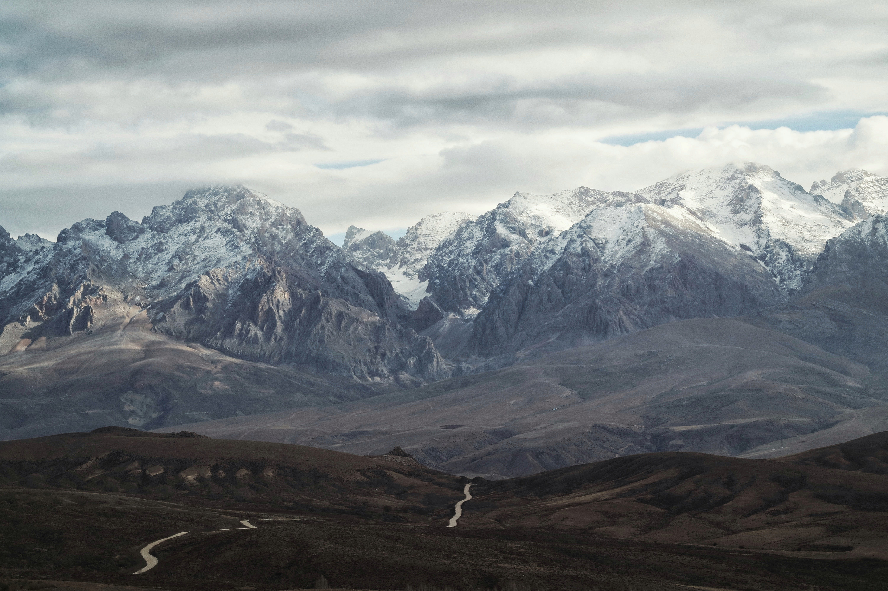
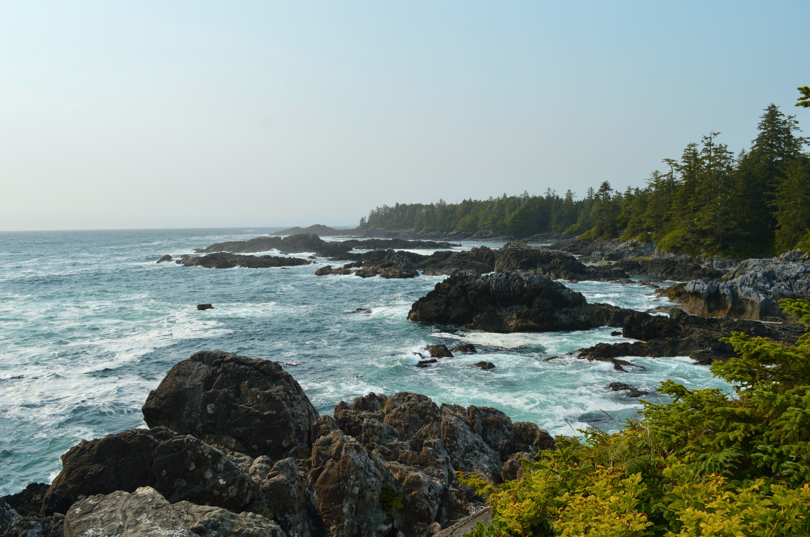
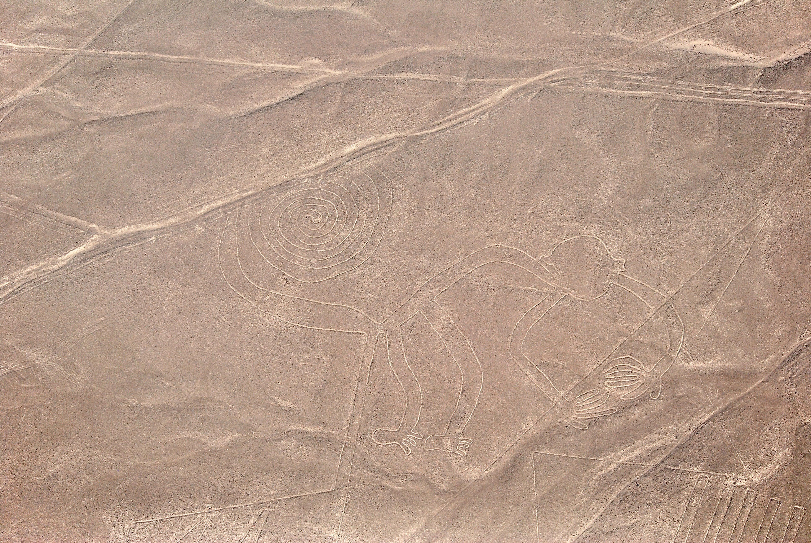
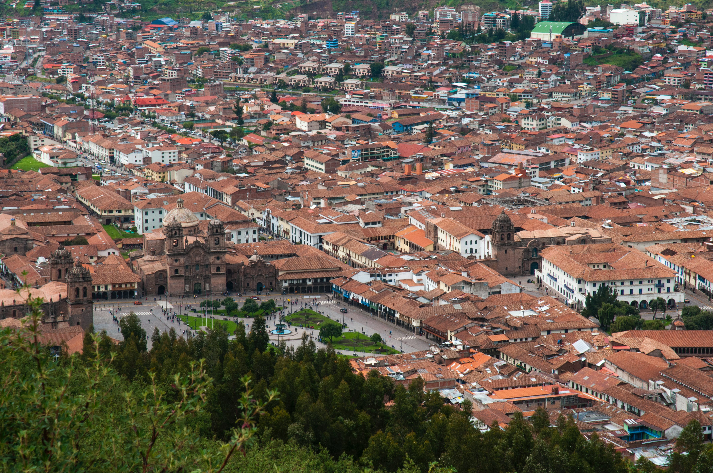
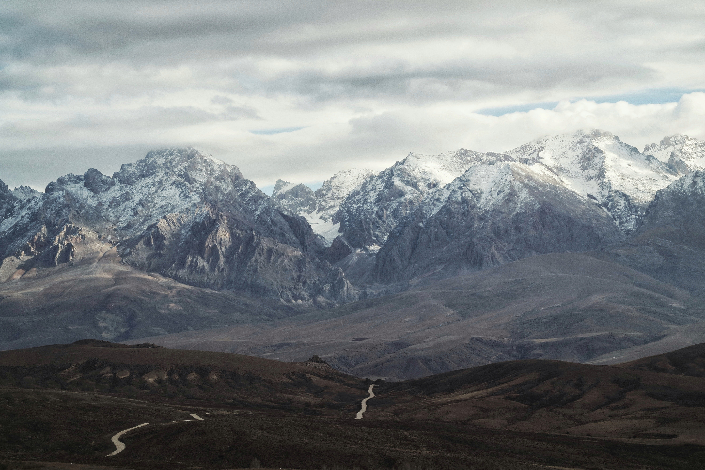
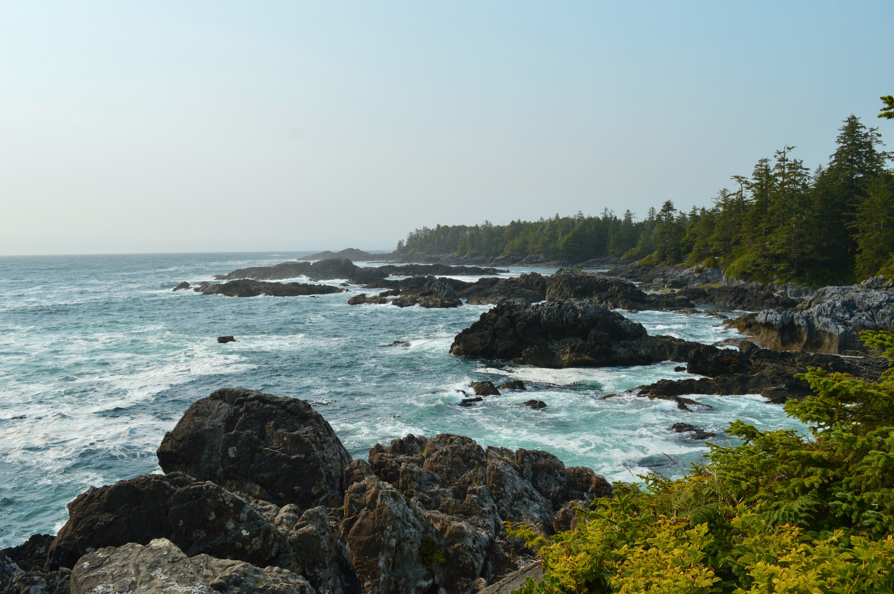
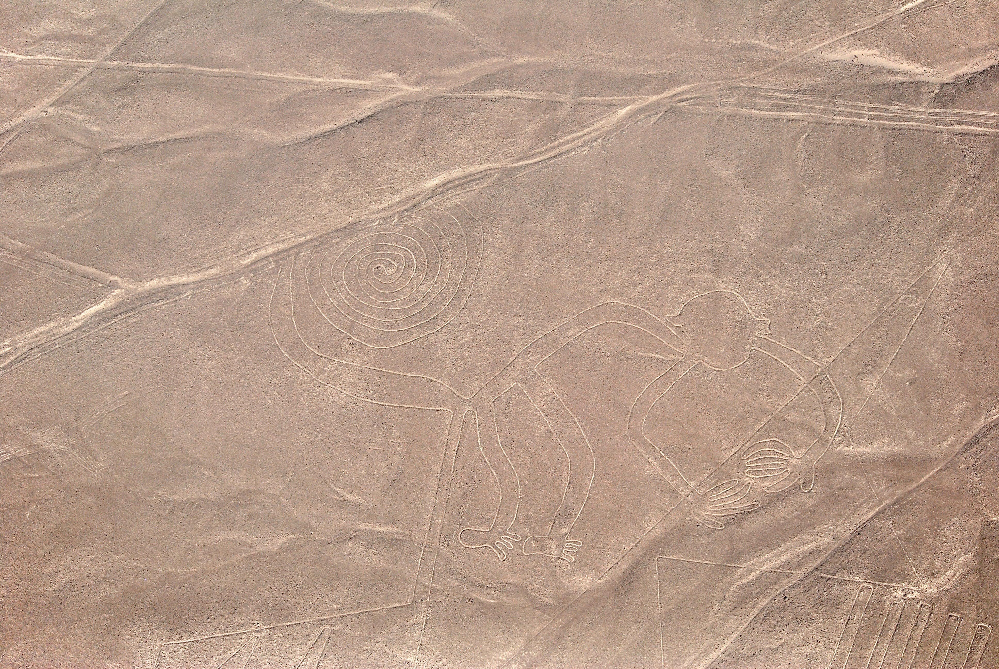

Visiting Peru
Peru, a land steeped in ancient history, beckons travelers with its archaeological wonders and diverse landscapes. The crown jewel, Machu Picchu, stands as a testament to the engineering prowess of the Inca civilization. The Sacred Valley offers a glimpse into traditional Andean life, while the Amazon Rainforest teems with unparalleled biodiversity. Lima, the capital, is a gastronomic paradise, where ceviche and pisco sours tantalize the taste buds. Peru's rich cultural heritage, vibrant markets, and breathtaking natural beauty make it a destination that seamlessly blends history, adventure, and culinary delights.
Machu Picchu: A UNESCO World Heritage site and one of the New Seven Wonders of the World, Machu Picchu is an ancient Incan city nestled in the Andes, offering breathtaking views and a glimpse into the rich history of the region.
Cusco: The historic capital of the Inca Empire, Cusco is a city with well-preserved colonial architecture and a lively atmosphere. Explore the Plaza de Armas and visit the Qorikancha, the Inca Sun Temple.
Sacred Valley: A picturesque valley with charming villages and ancient ruins, the Sacred Valley offers a tranquil escape and a chance to experience Andean culture.
Lake Titicaca: The highest navigable lake in the world, Lake Titicaca is known for its stunning scenery and unique floating Uros Islands, where indigenous communities live.
Nazca Lines: These mysterious geoglyphs etched into the desert floor are a UNESCO World Heritage site, sparking intrigue and speculation about their purpose.
Arequipa: Known as the "White City" due to its colonial architecture built from white volcanic stone, Arequipa is surrounded by dramatic landscapes, including the Colca Canyon.
 






